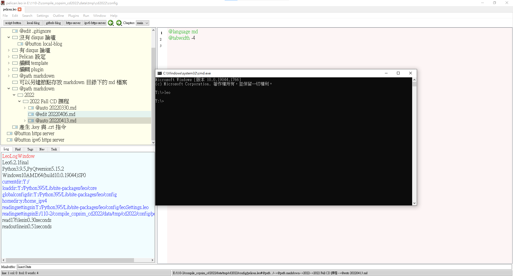
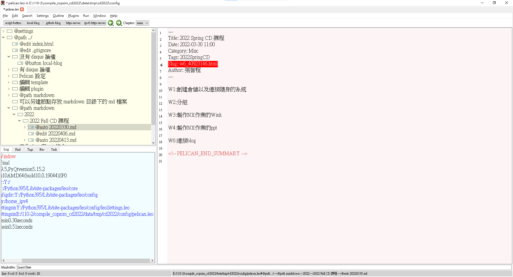
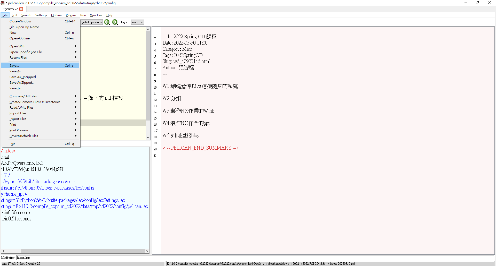
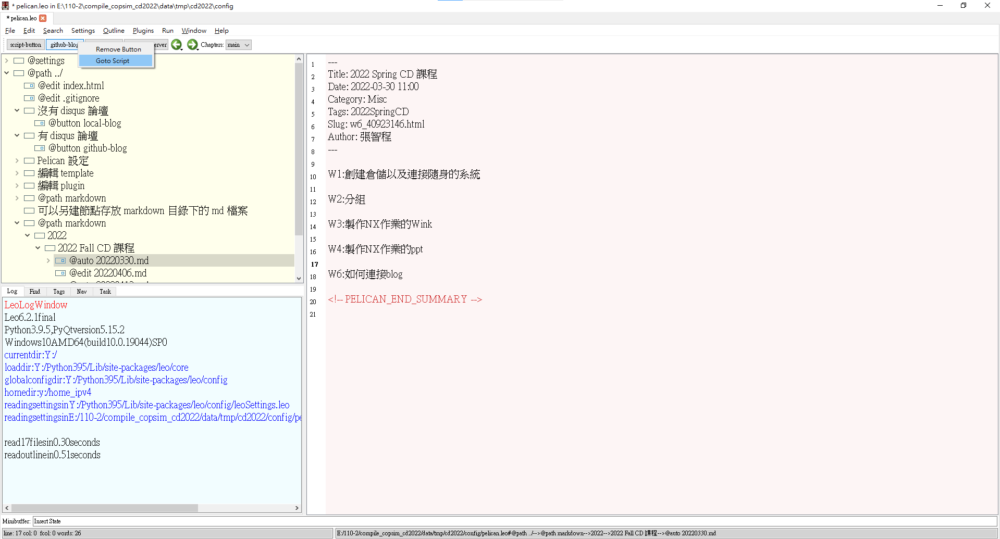
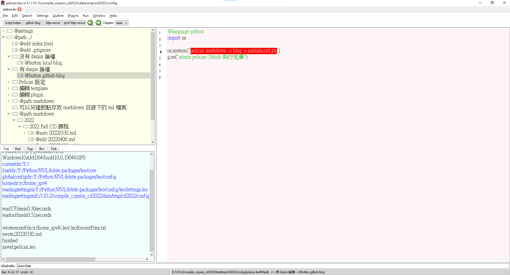

About <<
Previous Next >> HW1
進度或內容
W1:創建倉儲以及連接隨身的系統
步驟：進入 http://wcm.cycu.org:88/ 下載 compile_copsim_cd2022.7z
W2:分組
W3:製作NX作業的Wink
W4:製作NX作業的ppt
W6:連接blog
步驟1：在小黑窗打leo

步驟2：修改Slug即可修改blog網址

步驟3：修改完點擊 File>Save 將.md檔儲存在隨身碟

步驟4：對 github-blog 右鍵後，按下 Goto Script

步驟5：將 pelican markdown -o blog -s publishconf.py 打在小黑窗上，之後再對倉儲acp即可

W7:機械手臂
每個組員都會分配不同的繪圖軟體分別是 : Solvespace、NX(12、1980、2008皆可)與 Onshape
將Pick and Place demo範例所需的零組件繪製出來後，並進行組裝
W8:分配繪圖軟體
這次我被分配使用NX進行繪圖
零件連結:https://drive.google.com/drive/folders/1A3MerEACqONeIqTqjJ9JOCqxEkU5NJRd?usp=sharing
心得:這次期中檢驗，我被分配使用NX繪製零件，NX是從之前就有慢慢在學習了，所以大致上沒什麼問題，尺寸我是將比較複雜的零件轉.dwg檔，然後使用AutoCAD確定零件尺寸，這部分算是製圖部分最麻煩的地方。
W10:在老師的Wink上添加註解
W12:今天老師給我們看之前畢業學長姊的推甄準備資料，發現還有許多不足的地方
W13:將uArm 機械手臂繪製時將關鍵尺寸的變數名稱標註出來
W14:使用CoppeliaSim_4.3.0模擬MTB_robot
問題紀錄:
一開始組好之後無法模擬，後來看影片發現CoppeliaSim的版本需要下載4.3.0才可以使用。
CoppeliaSim_4.3.0
About <<
Previous Next >> HW1